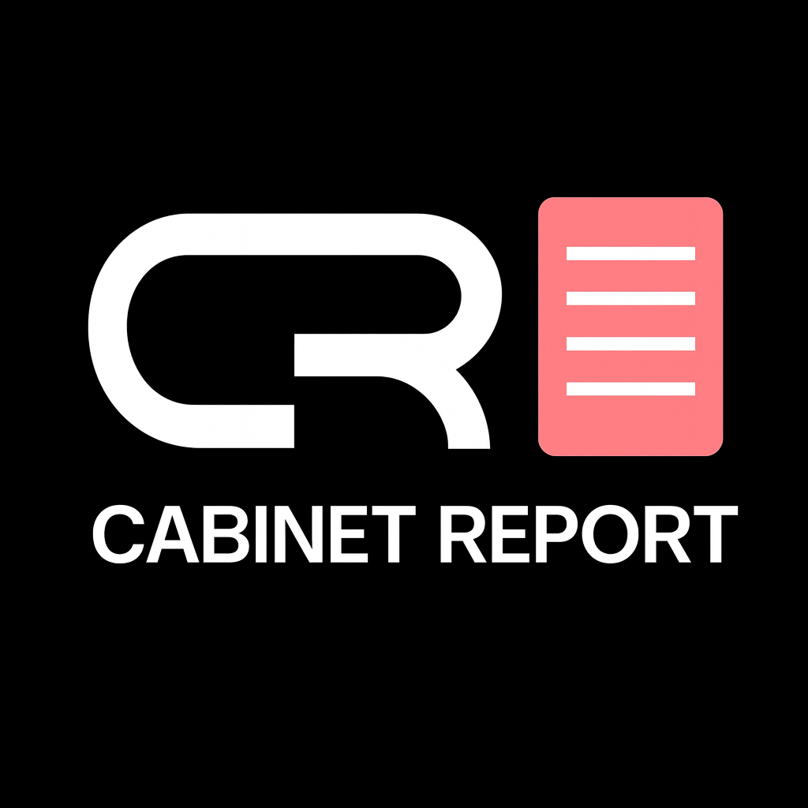

↗
Recomienda
Presenta Cabinet Report a empresas y profesionales del sector del mobiliario.
Un Software de Muebles para Fábricas de Muebles. Si te interesa la tecnología y el mundo de fabricación de muebles de melamina, puedes participar recomendando, vendiendo o acompañando a sus usuarios.

Un Software de Muebles para Fábricas de Muebles
Cabinet Report es un software de escritorio para apoyar la planificación y fabricación de muebles. Ayuda a organizar información técnica, piezas, medidas y materiales que forman parte del proceso de producción.
Su enfoque está orientado a fabricantes de muebles, talleres, profesionales de la carpintería y negocios que buscan estructurar mejor sus procesos, desde la preparación de reportes de producción hasta el trabajo con materiales y despieces.
El programa Partners permite que más personas conozcan esta herramienta y reciban beneficios por sus aportaciones acreditadas.
Descubre cómo participarNo todos tienen que vender. Cada rol contribuye de una forma diferente. El administrador de redes es un cargo interno de designación exclusiva, no una convocatoria abierta.
Presenta Cabinet Report a empresas y profesionales del sector del mobiliario.
El código o enlace de referencia permite atribuir correctamente la nueva suscripción.
Los pagos son calculados sobre suscripciones efectivamente cobradas y bajo el reglamento aplicable.
Porcentajes acordados por función y antigüedad de la suscripción. La primera mensualidad tiene un reparto especial.
Roles abiertos y cargos por designación: puedes expresar interés en las modalidades comerciales y técnicas. El Administrador Principal de Redes está actualmente asignado; su información económica se muestra solamente para consulta.
Recomienda Cabinet Report a personas que contraten una licencia nueva.
Desde la segunda hasta la duodécima mensualidad: 8% recurrente. Desde la 13: 0%. El 40% del primer pago se presenta por separado.
Responsable de la estrategia digital, publicaciones, campañas y coordinación de colaboradores autorizados.
Adicionales: 10% de la primera cuota de cada licencia nueva y 8% por captación acreditada en meses 2–12. Ambos fuera del tope de gestión.
Consigue clientes comprobables a través de códigos o enlaces de redes sociales.
8% sobre pagos de los meses 2 al 12 por captación verificable; 0% desde el mes 13. El 40% del primer pago corresponde únicamente si también eres el referidor acreditado.
Presenta el software, organiza demostraciones, negocia y acompaña el cierre.
Desde el mes 13: 0%. El primer pago especial corresponde al referidor acreditado, si aplica.
Apoya a clientes, resuelve dudas funcionales y ofrece servicios de capacitación autorizados.
Desde el mes 13: 8% mientras mantenga la gestión efectiva del cliente.
Combina captación, venta y gestión de clientes bajo acuerdos explícitos.
Desde el mes 13: 8% por gestión activa. El primer pago puede generar el 40% si también es referidor acreditado.
Elige el plan que vas a ofrecer y úsalo en la calculadora. Consulta siempre los importes y condiciones más recientes de la documentación oficial.
Precios mensuales indicados por Cabinet Report. Pueden cambiar; verifica el enlace oficial antes de hacer una oferta a un cliente.
Selecciona un rol, un plan y una sola cantidad de clientes. Compara cuánto te corresponde en el primer mes, en los meses 2–12 y desde el mes 13.
Refiere clientes nuevos y recibe una bonificación inicial y comisiones temporales por renovación.
Se simulan los mismos clientes en cada etapa de la suscripción. No se suman clientes nuevos todos los meses.
Los montos son exclusivamente del partner, no ingresos de Cabinet Report. Simulación sin bajas, reembolsos ni cambios de plan.
Simulación orientativa: las comisiones se generan únicamente sobre mensualidades efectivamente cobradas, con las funciones acreditadas y sujeto al acuerdo aplicable.
El programa prioriza la atribución comprobable y la independencia entre conceptos de comisión.
Una cotización o un clic no generan comisiones. Se requiere suscripción pagada.
Código de referencia o enlace para identificar nuevos clientes provenientes de redes.
Cabinet Report cubre las campañas publicitarias que autorice previamente.
Colaboradores adicionales quedan bajo coordinación del administrador principal, con beneficios negociados.
Estas respuestas reflejan los acuerdos actuales, no sustituyen un contrato firmado.
No. El puesto de Administrador Principal de Redes Sociales está ocupado y se asigna exclusivamente por decisión de Cabinet Report. No se aceptan postulaciones para ese cargo. Si se necesita ampliar el equipo, los colaboradores se incorporarán bajo la coordinación del administrador principal, con condiciones previamente negociadas.
No. El administrador obtiene hasta $1,000 por gestión general y además el 10% de primeras mensualidades nuevas, sin ese límite.
No. El 40% se paga exclusivamente por la primera mensualidad de cada cliente nuevo acreditado. Las siguientes cuotas generan un 8% del mes 2 al 12; desde el 13, 0%. La calculadora muestra el primer mes y las renovaciones de los meses posteriores por separado.
Sí. El 8% corresponde a cobros atribuibles por redes durante los meses 2 al 12. Se suma al 10% de gestión del administrador principal; en el mes 13, la captación digital por sí sola deja de generar comisión.
Cabinet Report paga las campañas que apruebe previamente. Este presupuesto no forma parte de la comisión del administrador.
Con códigos o enlaces de referencia y validación de una nueva suscripción efectivamente cobrada.
Las tasas por rol ya están establecidas en el programa; el calendario de liquidación y las condiciones de devolución se incluirán en el reglamento final.
No. La proyección anual corresponde a la misma cantidad de clientes durante 12 pagos: el primer año suma la primera mensualidad y 11 renovaciones; el segundo año estima 12 mensualidades desde el mes 13. No supone clientes nuevos adicionales cada mes y no garantiza ingresos.
Escribe tu nombre y selecciona el rol de tu interés. Abriremos un chat con Cabinet Report en WhatsApp y prepararemos tu mensaje para que solamente tengas que enviarlo.
Usaremos tu nombre únicamente para preparar el mensaje en tu navegador.
Escribe tu nombre para continuar.
Importante: el puesto de Administrador Principal de Redes es por designación directa de Cabinet Report, actualmente está asignado y no acepta postulaciones. Los colaboradores adicionales del área se incorporan solo por decisión de la empresa.
Enviar solicitud por WhatsApp ↗Abre el chat oficial +507 6635-9740 con el texto preparado. El mensaje no se envía automáticamente; tú decides si lo envías. Este sitio no guarda tu nombre ni recoge solicitudes en una base de datos.